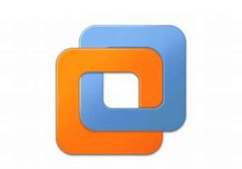

Arbeiten mit VM-Ware
Die letzten drei Tage haben wir grössten Teils mit VM-Ware gearbeitet. Mir war das Tool noch ganz neu, deswegen konnte ich viele EIgenschaften vom Tool lernen.
Neuer Benutzer
Vom Montag bis Mittwoch bekam man die Aufgabe VM-Ware zu erforschen. Der erste Schritt war es einen funktionierenden Windows Sever einzurichten und einen neuen Benutzer zu erstellen, der darauf zugriff hat. Es gab kriterien die, dieser Windowsnutzer erfüllen müsste. Die Kriterien handelten grössten Teils über den PC vorauf man einen neuen Nutzer erstellen muss. Wie zum Beispiel, wie viel Speicherplatz der Computer haben muss oder wie viele Harddisks er haben darf. Nachdem erstellen des Computers muss man Windows herunterladen und es als Isofile in den PC reintun und danach kann man sich nur noch anmelden und die Aufgabe ist erfüllt.
Directory Listing des Inhaltsverzeichnisses der VM
Für den zweiten Auftrag musste man ein Directory Listing vom Inhaltsverzeichniss der VM machen. Dafür konnte man das CMD Programm Im virtuellen PC benutzen. Um das Directory Listing zu bekommen musste man einen besrimmten Befehl in das CMD eingeben. Die Ergebnisse mussten wir dann einfach in Notepad rein kopieren und der Auftrag wäre auch erledigt.
- VM-Ware
- Windows
- CMD
- Directory Listing
Fazit
Mein Fazit ist das ich diese Woche noch spannender und interessanter fand als die letzte Woche. Ich finde das diese Woche bisher am aufregendsten war, weil wir viel neues gelernt haben was uns in der Zukunft sicher nützlich sein wird.